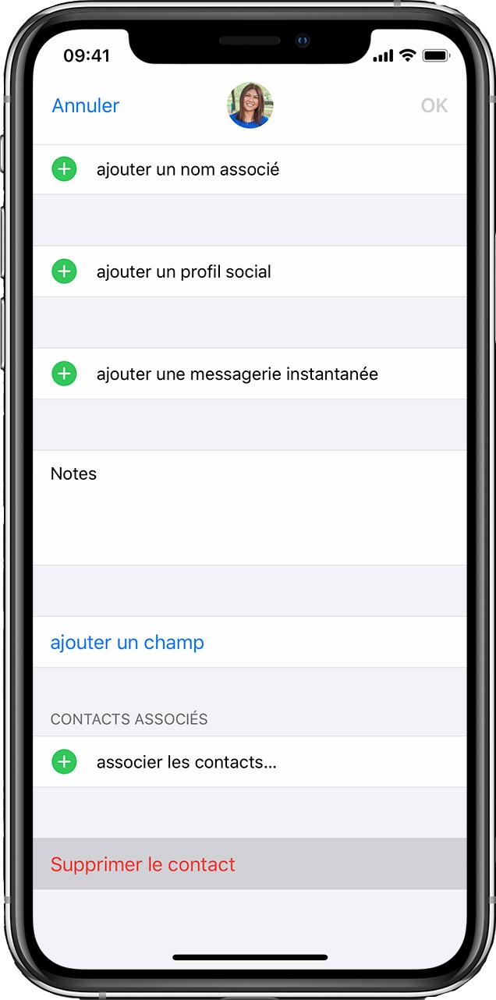
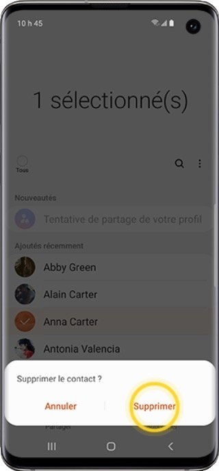

Vous êtes entouré par des personnes toxiques ?
Ces personnes empoisonnent votre quotidien ?
Vous vous sentez perdu et ne savez pas plus quoi faire pour les supprimer de votre vie ?

Pour supprimer un contact sur Iphone :
1. Ouvrez l’app Contacts et touchez le
contact que vous souhaitez supprimer.
2. Touchez Modifier.
3. Faites défiler vers le bas et touchez
Supprimer le contact, puis choisissez
à nouveau Supprimer le contact pour
confirmer l’opération.

Pour supprimer un contact sur android :
1. Faites glisser l’écran d’accueil vers le haut.
2. Touchez Contacts
3. Touchez pendant quelques instants le nom
du contact que vous voulez supprimer.
4. Touchez Supprimer.
5. Touchez Supprimer pour confirmer la suppression.